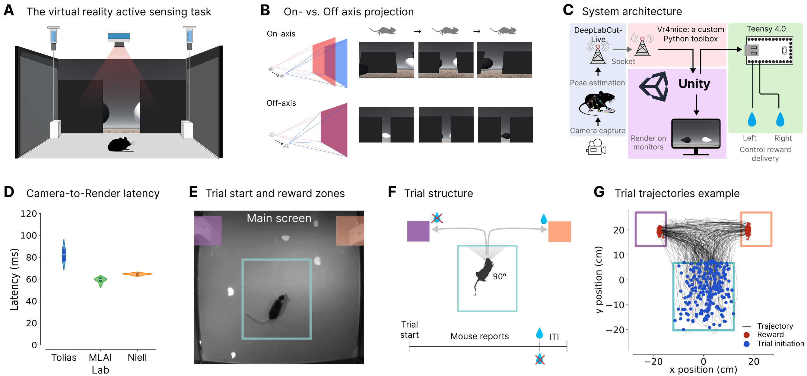
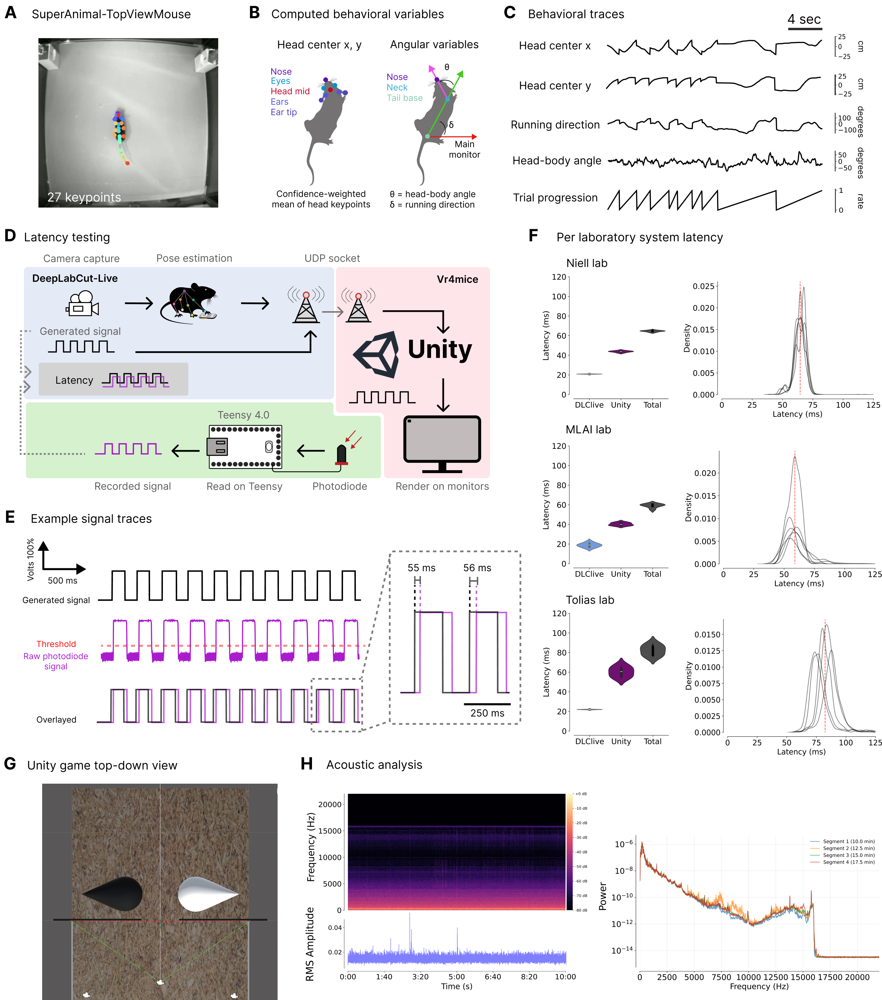
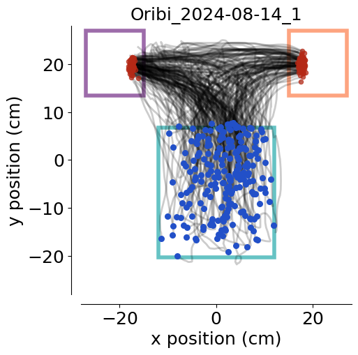
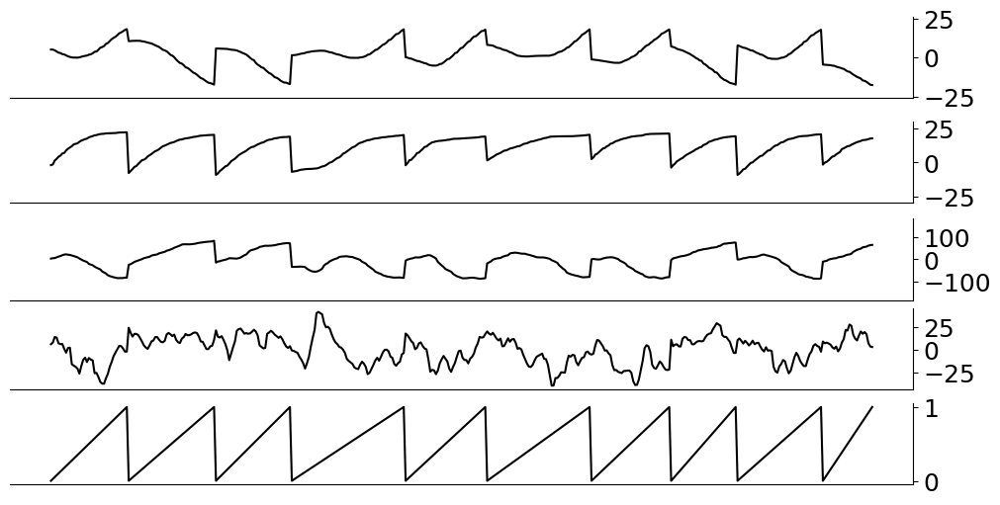
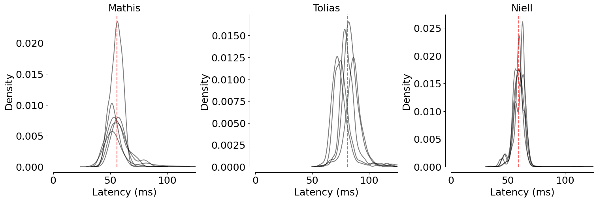
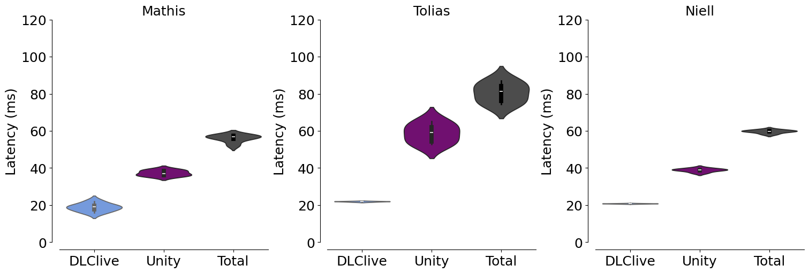
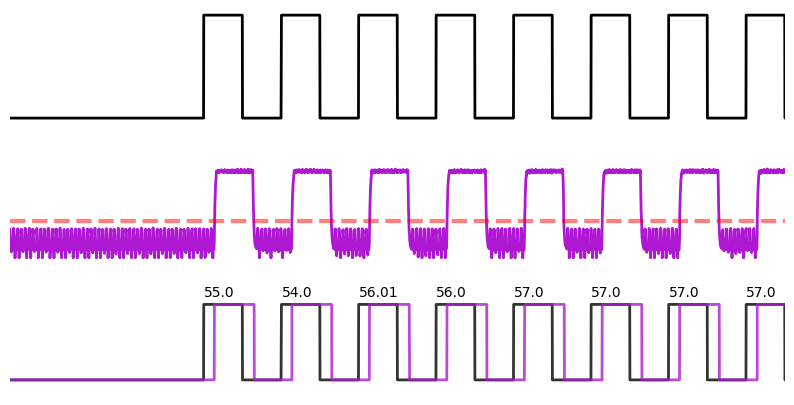
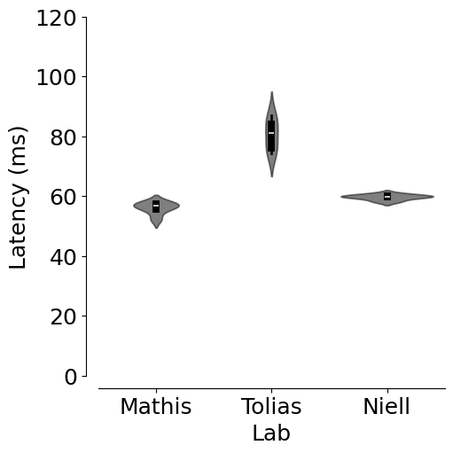

Figure 1#
A closed-loop virtual-reality active sensing task for mice.#
For reference, here is the full figure

and corresponding supplemental figure

cd "/app/"
/app
/app/.venv/lib/python3.9/site-packages/IPython/core/magics/osm.py:417: UserWarning: using dhist requires you to install the `pickleshare` library.
self.shell.db['dhist'] = compress_dhist(dhist)[-100:]
%run env_aws.py
%run run.py connect
/app/.venv/lib/python3.9/site-packages/datajoint/plugin.py:2: UserWarning: pkg_resources is deprecated as an API. See https://setuptools.pypa.io/en/latest/pkg_resources.html. The pkg_resources package is slated for removal as early as 2025-11-30. Refrain from using this package or pin to Setuptools<81.
import pkg_resources
[2026-03-11 11:00:26,535][INFO]: Connecting admin@vr4mice-ar-collab.cluster-cn54f38qpzgm.eu-central-1.rds.amazonaws.com:3306
[2026-03-11 11:00:26,713][INFO]: Connected admin@vr4mice-ar-collab.cluster-cn54f38qpzgm.eu-central-1.rds.amazonaws.com:3306
from vr4mice.schema.base_analysis import DataFrame
import pandas as pd
import matplotlib.pyplot as plt
import numpy as np
import seaborn as sns
from vr4mice.analysis import plotting
from base_schemas.schemas.exp import Session
from vr4mice.schema import base_analysis, dlc, vr4mice
from vr4mice.analysis.analysis import style
from vr4mice.schema.vr4mice import SignalsPhotodiode, Collab, Labs
from vr4mice.schema.latency_tests import AllLatencies, SignalsPhotodiodeAligned
from vr4mice.analysis.latency_testing import get_signals, find_rising_edges, get_latency
from matplotlib.colors import ListedColormap
style()
save_fig_path = "notebooks/Paper_figures/Figure_output/"
Behavioral traces#
key = {"dataset": "Oribi_2024-08-14_1"}
df = DataFrame().get_data(
key=key, columns=["dataset", "reward", "x", "y", "trial", "aperture", "iti"]
)
box_df = base_analysis.BoxDataFrame().get_data(key=key)
fig, ax = plt.subplots(1, 1, figsize=(5, 5))
plotting.plot_session(
df=df[df.iti == 0.0], box_df=box_df, per_aperture=False, per_side=False, ax=ax
)
sns.despine(offset=10)
plt.savefig(
save_fig_path + "figure1_example_session_trajectory_plot.svg", transparent=True
)

key = {"dataset": "Pheasant_2024-08-21_1"}
traces_to_plot = ["head_center_x", "head_center_y", "heading_dir", "head_angle"]
dlc_df = dlc.OfflineKinematics().get_data(key=key, columns=traces_to_plot)
df = DataFrame().get_data(
key=key,
columns=["dataset", "reward", "x", "y", "trial", "trial_step", "aperture", "iti"],
)
df = dlc_df.join(df)
df = df[df.iti == 0.0]
fig, ax = plt.subplots(5, 1, figsize=(10, 5), sharex=True, constrained_layout=True)
trial = df[df.trial.isin(range(10, 20))].copy().reset_index()
trial["trial_length"] = trial.groupby(["trial"], as_index=False)[
"trial_step"
].transform(lambda x: x / x.max())
ax[0].plot(trial.x, c="black")
ax[0].set_ylim(-26, 26)
ax[0].set_xticks([])
ax[1].plot(trial.y, c="black")
ax[1].set_ylim(-30, 30)
ax[2].plot(trial.heading_dir, c="black")
ax[2].set_ylim(-180, 180)
ax[3].plot(trial.head_angle, c="black")
ax[4].plot(trial.trial_length, c="black")
plt.rc("axes.spines", top=False, bottom=False, left=False, right=False)
for a in ax:
a.yaxis.tick_right() # Moves the ticks to the right
a.yaxis.set_label_position("right") # Moves the label to the right
a.spines["right"].set_position(("outward", 0)) # Adjust the right spine outward
a.spines["left"].set_visible(False) # Hide the left spine
a.spines["right"].set_visible(True)
print(traces_to_plot, key)
plt.savefig(save_fig_path + "figure1_behavioural_var_traces.svg", transparent=True)
['head_center_x', 'head_center_y', 'heading_dir', 'head_angle'] {'dataset': 'Pheasant_2024-08-21_1'}

Latency tests#
# fetch latency data and transform into dataframe
mathis = (AllLatencies() & 'dataset LIKE "%Latencytest1%"').fetch( as_dict=True)
mathis_df = pd.concat([pd.DataFrame(d) for d in mathis])
mathis_df ["lab_id"] = "Mathis"
tolias = (AllLatencies() & 'dataset LIKE "%Latencytest2%"').fetch(as_dict=True)
tolias_df = pd.concat([pd.DataFrame(d) for d in tolias])
tolias_df ["lab_id"] = "Tolias"
niell = (AllLatencies() & 'dataset LIKE "%Latencytest3%"').fetch(as_dict=True)
niell_df = pd.concat([pd.DataFrame(d) for d in niell])
niell_df ["lab_id"] = "Niell"
latencies = pd.concat([mathis_df, tolias_df, niell_df])
mean_latencies = latencies.groupby(["dataset", "lab_id"], as_index=False).mean()
mean_latencies [["dataset", "time_diff"]]
| dataset | time_diff | |
|---|---|---|
| 0 | Latencytest1_2024-10-31_1 | 0.057624 |
| 1 | Latencytest1_2024-10-31_2 | 0.052294 |
| 2 | Latencytest1_2024-10-31_3 | 0.055488 |
| 3 | Latencytest1_2024-10-31_4 | 0.057332 |
| 4 | Latencytest1_2024-10-31_5 | 0.057414 |
| 5 | Latencytest1_2024-10-31_6 | 0.056474 |
| 6 | Latencytest2_2025-05-19_2 | 0.081183 |
| 7 | Latencytest2_2025-05-19_3 | 0.084220 |
| 8 | Latencytest2_2025-05-19_4 | 0.087179 |
| 9 | Latencytest2_2025-05-19_5 | 0.074448 |
| 10 | Latencytest2_2025-05-19_6 | 0.076069 |
| 11 | Latencytest3_2025-05-19_1 | 0.059755 |
| 12 | Latencytest3_2025-05-19_2 | 0.058267 |
| 13 | Latencytest3_2025-05-19_3 | 0.060046 |
| 14 | Latencytest3_2025-05-19_4 | 0.059708 |
| 15 | Latencytest3_2025-05-19_5 | 0.060740 |
fig, ax = plt.subplots(1,3, figsize = (15,5), constrained_layout=True)
for i, lab in enumerate(latencies.lab_id.unique()):
lab_latencies = latencies [latencies.lab_id == lab]
g = sns.kdeplot(data=lab_latencies, x= lab_latencies.time_diff*1000, hue="dataset", palette=ListedColormap(['black']).colors, alpha=0.5, legend=False, ax=ax[i])
ax[i].set_xlim(0,125)
ax[i].set_xlabel("Latency (ms)")
ax[i].axvline(np.mean(lab_latencies.time_diff*1000), c="red", linestyle="dashed", alpha = 0.7)
print(f"lab = {lab} mean (ms): ", np.mean( lab_latencies.time_diff*1000), "std:", np.std( lab_latencies.time_diff*1000))
sns.despine(offset=10)
ax[i].set_title(lab)
plt.savefig(save_fig_path + "figure1_roundtrip_latency.svg")
lab = Mathis mean (ms): 55.97584937966045 std: 9.15024485453672
lab = Tolias mean (ms): 80.85091598421178 std: 9.345266512532897
lab = Niell mean (ms): 59.70393234562562 std: 6.306178290000413

fig, ax = plt.subplots(1,3, figsize = (15,5), constrained_layout=True)
for i, lab in enumerate(mean_latencies.lab_id.unique()):
lab_latencies = mean_latencies [mean_latencies.lab_id == lab]
sns.violinplot(x=np.repeat("DLClive", len(lab_latencies ["time_diff"])), y=abs(lab_latencies ["frame_to_socket"])*1000, color="cornflowerblue", ax=ax[i])
sns.violinplot(x=np.repeat("Unity", len(lab_latencies ["time_diff"])), y=(abs(lab_latencies ["time_diff"])*1000) - (abs(lab_latencies ["frame_to_socket"])*1000), color="purple", ax=ax[i])
sns.violinplot(x=np.repeat("Total", len(lab_latencies ["time_diff"])), y=abs(lab_latencies ["time_diff"])*1000, color="black", alpha=0.7,ax=ax[i])
ax[i].set_ylabel("Latency (ms)")
ax[i].set_ylim(0,120)
sns.despine(offset=10)
ax[i].set_title(lab)
plt.savefig(save_fig_path + "figure1_mean_latencies.svg")

# This fecth call takes some time as the photodide is sampled at 1000 hz
df = pd.DataFrame((SignalsPhotodiodeAligned() & 'dataset = "Latencytest1_2024-10-31_2"').fetch(as_dict=True)[0])
rising_edges_signal = find_rising_edges(df.time_stamp, df.signal_read)
rising_edges_photodiode = find_rising_edges(df.time_stamp, df.photodiode_read)
latencies = get_latency(rising_edges_signal, rising_edges_photodiode)
start_time = df.time_stamp[np.where(df.signal_read == 1)[0][0]]
print("start_time", start_time)
fig, ax = plt.subplots(3,1,figsize=(10,5))
ax[0].plot(df.time_stamp, df.signal_read,c="black",linewidth=2)
ax[1].plot(df.time_stamp, df.photodiode_raw_scaled, c="#AE18D3",linewidth=2)
ax[2].plot(df.time_stamp, df.signal_read, c="black",linewidth=2,alpha=0.8)
ax[2].plot(df.time_stamp, df.photodiode_read, c="#AA1BCE",linewidth=2,alpha=0.8)
for ft, td in zip(latencies.frame_time, latencies.time_diff):
ax[2].annotate(round(td*1000, 2), (ft, 1.1))
ax[1].set_ylim(-0.2,1.3)
ax[1].axhline(0.3,c="red",linestyle="dashed",alpha=0.5, linewidth=3)
ax[2].set_ylim(-0.2,1.3)
sns.despine(offset=10)
for a in ax:
a.axis('off')
a.set_xlim(start_time-1,start_time+3)
plt.savefig(save_fig_path + "figure1_signal.svg")
start_time 10.146146774291992

mean_latencies
| dataset | lab_id | frame_time | time_diff | photodiode_time | frame_to_socket | |
|---|---|---|---|---|---|---|
| 0 | Latencytest1_2024-10-31_1 | Mathis | 160.206761 | 0.057624 | 160.264385 | 0.022104 |
| 1 | Latencytest1_2024-10-31_2 | Mathis | 183.545026 | 0.052294 | 183.597319 | 0.015869 |
| 2 | Latencytest1_2024-10-31_3 | Mathis | 391.928782 | 0.055488 | 391.984271 | 0.019394 |
| 3 | Latencytest1_2024-10-31_4 | Mathis | 176.912174 | 0.057332 | 176.969506 | 0.019602 |
| 4 | Latencytest1_2024-10-31_5 | Mathis | 205.440877 | 0.057414 | 205.498290 | 0.018630 |
| 5 | Latencytest1_2024-10-31_6 | Mathis | 150.832268 | 0.056474 | 150.888741 | 0.017312 |
| 6 | Latencytest2_2025-05-19_2 | Tolias | 180.560032 | 0.081183 | 180.641215 | 0.022077 |
| 7 | Latencytest2_2025-05-19_3 | Tolias | 214.032393 | 0.084220 | 214.116613 | 0.022139 |
| 8 | Latencytest2_2025-05-19_4 | Tolias | 163.218385 | 0.087179 | 163.305564 | 0.021935 |
| 9 | Latencytest2_2025-05-19_5 | Tolias | 165.315094 | 0.074448 | 165.389542 | 0.021643 |
| 10 | Latencytest2_2025-05-19_6 | Tolias | 160.403716 | 0.076069 | 160.479785 | 0.021897 |
| 11 | Latencytest3_2025-05-19_1 | Niell | 257.911612 | 0.059755 | 257.971367 | 0.020662 |
| 12 | Latencytest3_2025-05-19_2 | Niell | 241.062477 | 0.058267 | 241.120744 | 0.020862 |
| 13 | Latencytest3_2025-05-19_3 | Niell | 229.157876 | 0.060046 | 229.217922 | 0.020995 |
| 14 | Latencytest3_2025-05-19_4 | Niell | 229.136176 | 0.059708 | 229.195884 | 0.020870 |
| 15 | Latencytest3_2025-05-19_5 | Niell | 249.621961 | 0.060740 | 249.682701 | 0.020756 |
fig, ax = plt.subplots(1,1, figsize = (5,5), constrained_layout=True)
sns.violinplot(data=mean_latencies, x="lab_id", y=mean_latencies.time_diff*1000, color="black", ax=ax, alpha=0.5)
ax.set_ylabel("Latency (ms)")
ax.set_xlabel("Lab")
ax.set_ylim(0,120)
sns.despine(offset=10)
plt.savefig(save_fig_path + "figure1_mean_latencies_lab.svg")

mean_latencies.groupby("lab_id")["time_diff"].mean() * 1000, mean_latencies.groupby("lab_id")["time_diff"].sem() * 1000
(lab_id
Mathis 56.104219
Niell 59.703195
Tolias 80.619879
Name: time_diff, dtype: float64,
lab_id
Mathis 0.828018
Niell 0.403628
Tolias 2.398950
Name: time_diff, dtype: float64)